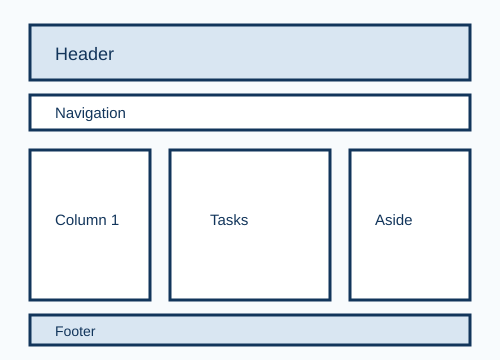

HTML Structure
Review semantic tags such as header, nav, main, section, article, aside, and footer.
Plan weekly study tasks for the Creative Computing web development module.

This wireframe shows the planned structure of the study planner, including the header, navigation, columns, task cards, and footer.
Review semantic tags such as header, nav, main, section, article, aside, and footer.
Practise using flexbox, spacing, colours, and consistent typography.
Prepare images with useful alt text, titles, sizes, and licence information.
Create navigation menus and test that internal and external links work correctly.
Revise basic variables, functions, events, and simple interactive behaviour.